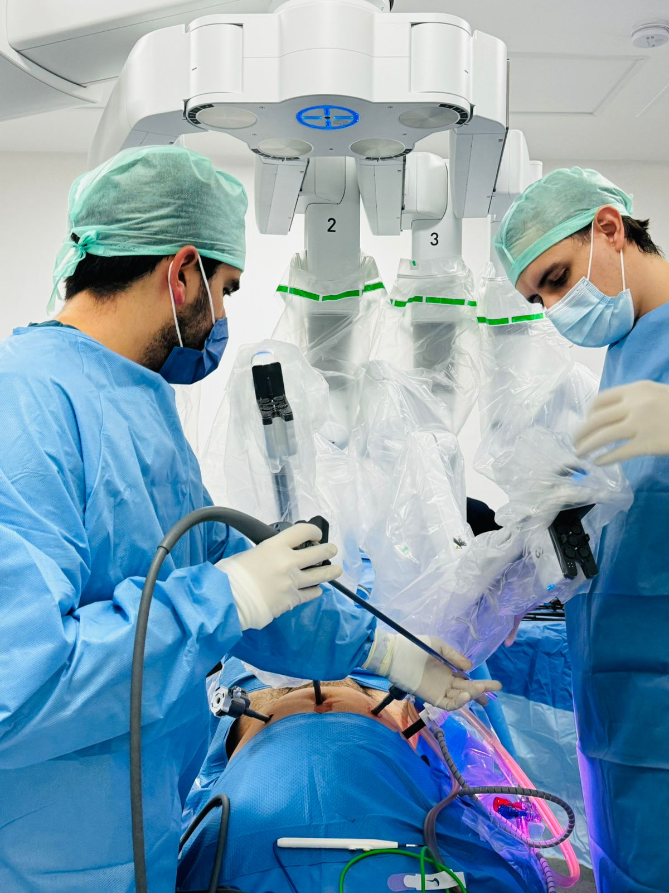
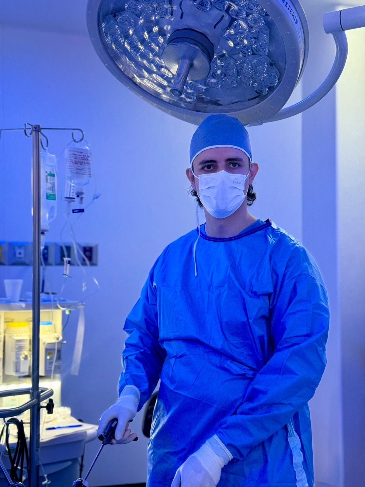
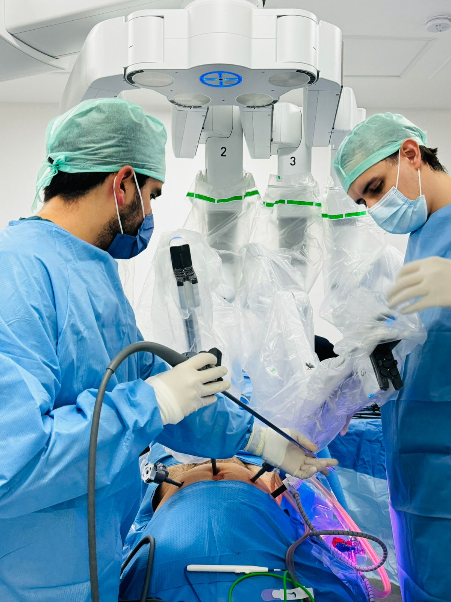
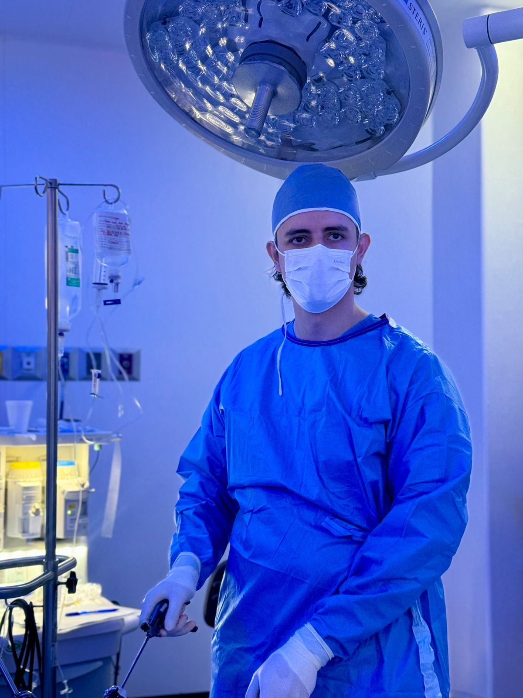
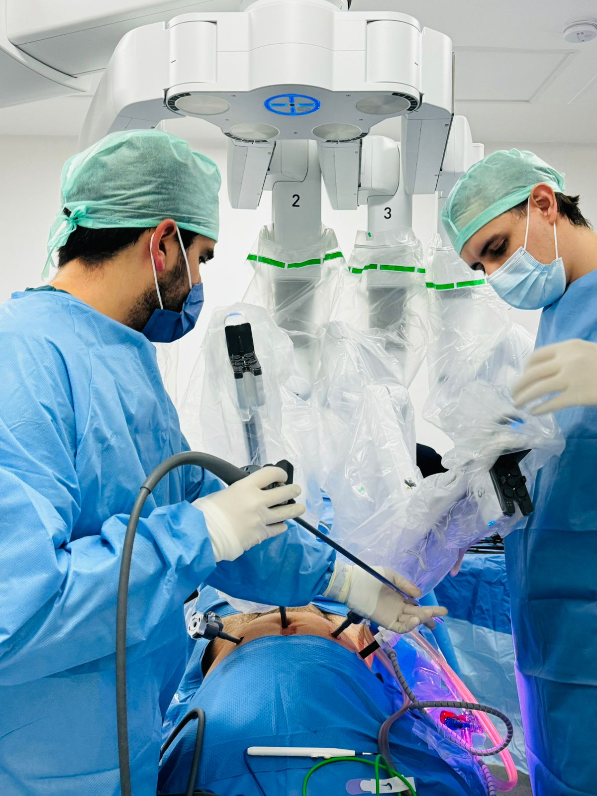
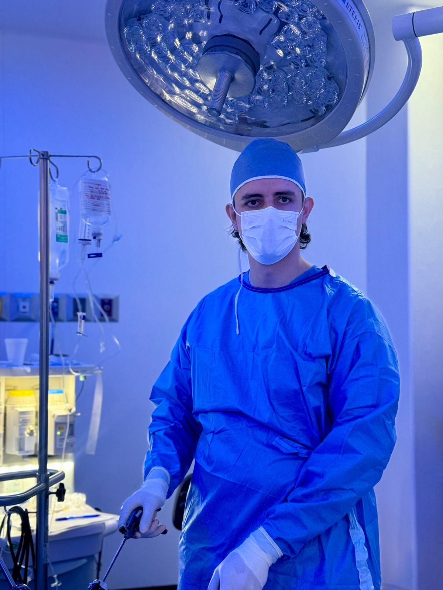
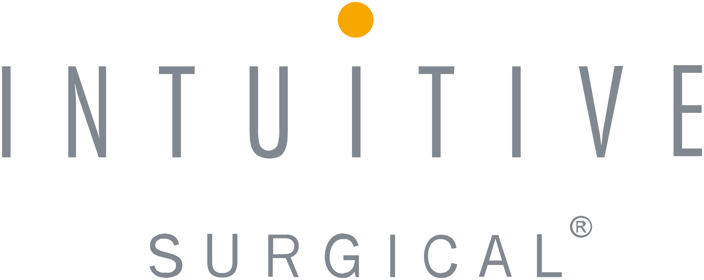
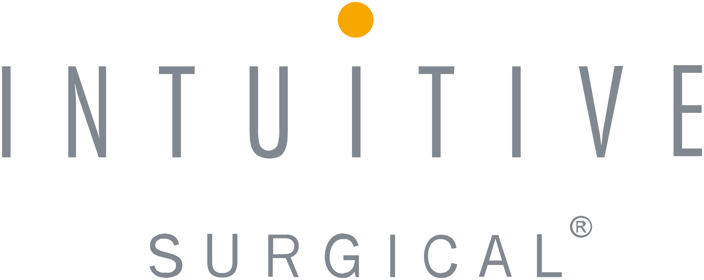

Galería
 



Urología de Precisión · Cirugía Robótica y Laparoscopía
Especialista en Urología de Mínima Invasión. Egresé de la Facultad de Medicina de la Universidad de Guadalajara, me especialicé en Urología en el Hospital General "Dr. Manuel Gea González", y completé alta especialidad en Endourología, Laparoscopía y Cirugía Robótica con certificación de Intuitive Surgical. Atiendo en Arandas y Guadalajara, Jalisco.


Calle Martínez Valadez #68 Altos, Centro, Arandas, Jalisco, C.P. 47180
Hospital San Javier, Torre 2, Piso 5, Consultorio 515, Guadalajara, Jalisco
 

Teléfonos: 3311962152 / 3487832410 / Urgencias 348 105 63 54
Email: drmunozuroprecision@gmail.com